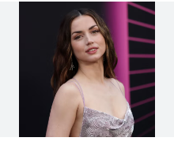

Ana de Armas
Actriz
Ana Celia de Armas Caso es una actriz hispano-cubana. Comenzó su carrera con 16 años y obtuvo reconocimiento internacional en el cine.
Actriz
Ana Celia de Armas Caso es una actriz hispano-cubana. Comenzó su carrera con 16 años y obtuvo reconocimiento internacional en el cine.
Actriz
Actriz estadounidense conocida por su papel en la serie de Netflix Outer Banks y la película Glass Onion.
Futbolista
Futbolista argentino, capitán de la selección argentina y jugador del Inter Miami. Considerado uno de los mejores de la historia.